カテゴリ：ブログ作成～公開後～
投稿日：2025年5月28日
13回目となる今回は、JavaScriptを活用してリンクを貼る際にリンク先の特定のタグ(今回は<h1>)からテキスト情報を取得し、リンクテキストに自動的に入力されるようにします！
※セキュリティ制限(CORS)のため、同一ドメイン(自分のブログ内のHTML)からしか取得できません。
現状はページ下部の前の記事次の記事、トップページの記事一覧などの各リンクテキストは全て記事タイトル等を確認しながら手入力しています。
1記事増えるたびに次の記事、記事一覧、更新履歴、カテゴリ一覧の項目にリンクを追加し、テキストを入力したものをコピーしています。
トップページの記事一覧。この作業のリンクテキストの入力が無くなるだけで楽になりますよね！
第10回ではトップページでのみ使用するJavaScriptだったのでページの中にコードを書きましたが、今回のコードは全記事に貼り付けるため、.jsファイルを作成してそれを読み込むようにします。
やりたいことが決まったので、どうすれば導入できるかChatGPTに聞いてみます！
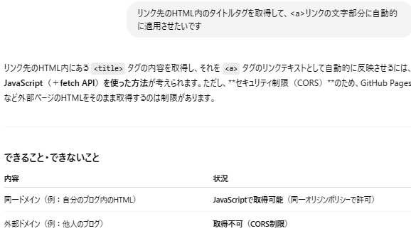JavaScript(+fetch API)で導入できるみたいです！
セキュリティ制限のため、自分のブログ内のファイルにしかアクセスできないので注意です！
fetchは第10回で出てきた、指定のデータにアクセスするメソッドですね！
前回はHTMLにアクセスしましたが今回はURLにアクセスします。
APIとはApplication Programing Interfaceの略で、
アプリが別のサービスと会話するための窓口です。
よく使われる例としては天気APIで今日の天気を取得したり、Google Maps APIで地図を表示したり、
現在位置を取得したりするのに使われているようです。
fetch APIについてChatGPTに質問したときに、図解でも紹介できますよ！
とのことだったので作ってもらいました。優秀すぎる！！！
では実際にどのようなコードを使用するのか見てみましょう！
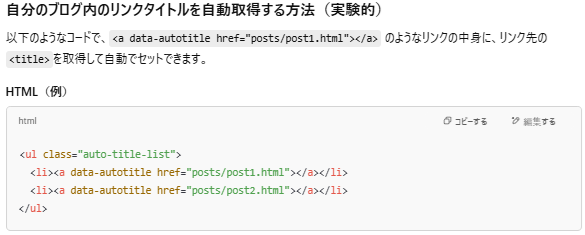まずは本文に貼るリンクに属性を付与します。
<ul>タグにclass=auto-title-listを付与し、<li>タグのリンクにdata-autotitleを付与します。
classはCSSを適用させるときに属性の指定に使いました。
ではdata-〇〇とは何なのでしょうか！ChatGPTに聞いてみました。
結論から言うとclassはCSSでスタイルを当てるために使う。
data-〇〇はJavaScriptにデータを渡すために使うものです。
次はHTMLの最後などに追加するJavaScriptのコードを見てみましょう。
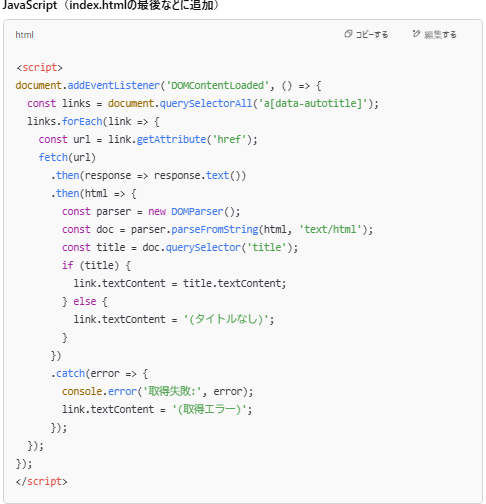では1行ずつ解説します。by ChatGPTに聞いた
document.addEventListener('DOMContentLoaded', () => {
const links = document.querySelectorAll('a[data-autotitle]');
links.forEach(link => {
const url = link.getAttribute('href');
fetch(url)
.then(response => response.text())
.then(html => {
const parser = new DOMParser();
const doc = parser.parseFromString(html, 'text/html');
const title = doc.querySelector('title');
if (title) {
link.textContent = title.textContent;
} else {
link.textContent = '(タイトルなし)';
}
})
.catch(error => {
console.error('取得失敗:', error);
link.textContent = '(取得エラー)';
});
ということでコードを一通り理解した(つもりな)ので次は.jsファイルを作成しましょう！
ブログプロジェクトにjsフォルダを作成し、autoTitle.jsファイルを新しく作ります。
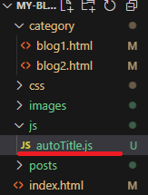そのファイルにJavaScriptコードを貼り付けます。
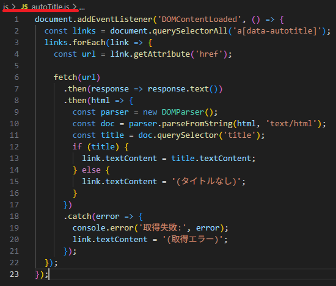これで準備完了です！！
前回の記事にHTMLコードを貼り付けてみましょう。
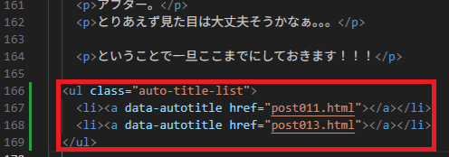ページの一番下に配置しました。
この段階ではリンク先のテキストを入れ込む箱を作っただけです。
どうなっているかというと
無。なにも無い。ここにテキストを入れるためのJavaScriptを読み込むコードを貼りましょう。
<script src="js/autoTitle.js" defer>を</body>タグの直前に貼り付けます。
</body>タグの直前に置きました！jsファイルのパスを正しく指定しなおしました。
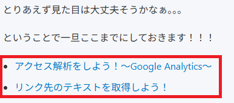するとどうでしょう。。。無事リンク先のタイトルを勝手に取得してきましたね！
あとはスタイルを適用させるためにpost-nav属性を付与して
ついでにリンクを<p>タグで囲んで、前の記事は←、次の記事は→矢印を付け足します。
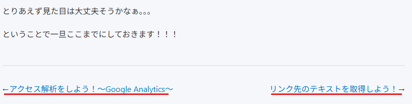うまくいきました～～～！！！これでいちいちタイトルを手入力しなくて済みますね～
トップページにも適用したいのですが、こちらは第〇回も表示してほしいので、見出し1である<h1>を取得する.jsファイルを作ります。
作り方は簡単。jsフォルダにautoh1.jsファイルを作成してautoTitleの中身をコピー。
赤枠部分を選択し、titleをh1に書き換えます。
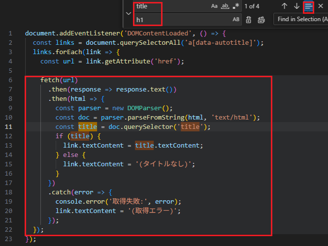JavaScriptを読み込む際にautoh1.jsを指定します。
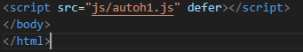リンクのタグを書き換えて、テキストを消します（消さなくても問題なかったですが一応。）
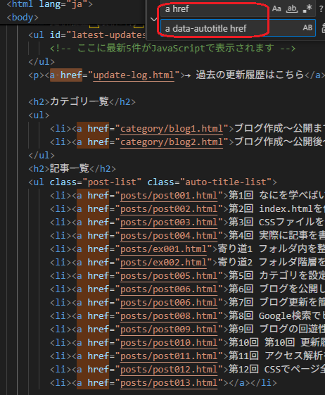↓↓↓ ↓↓↓
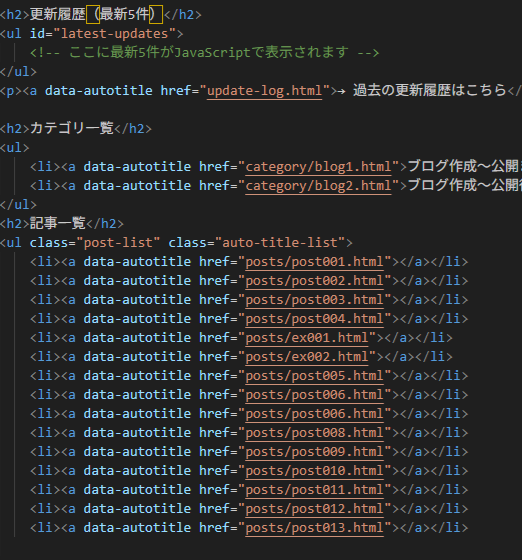するとどうでしょう。
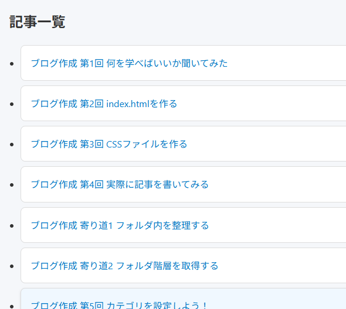トップページには見出し1を取得し、ブログ作成 第〇回まで含んだものが表示されています！！！
成功～～～～！！！！！
今回のように複数ページにJavascriptを使用する場合や、編集したいときなどはページに書き込むのではなく、.jsファイルを作成すると編集が楽ですね！
ということで今回はここまで！
カテゴリ：ブログ作成～公開後～